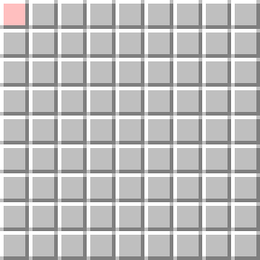
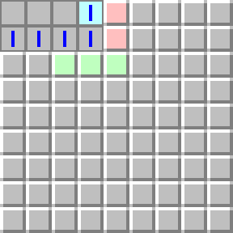
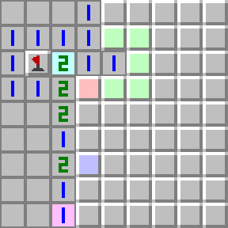
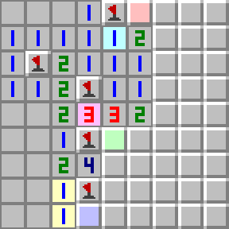
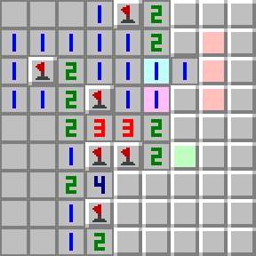
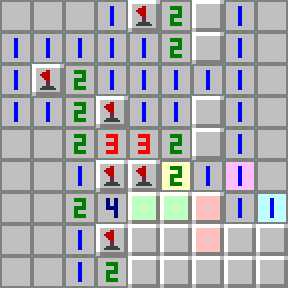
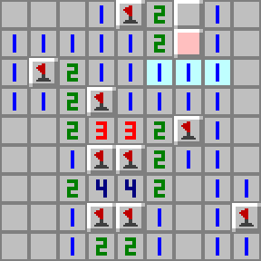
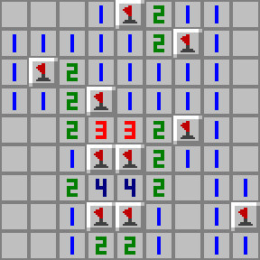

Játékmenet
Az aknakeresőben, a rejtett aknák szétvannak szórva egy táblán, amely mezőkre van osztva. A mezőknek többféle lehetséges állapota lehet:
- Fedett mező (kezdetben ez a típusú mező takarja a táblánkat, egy zászló törlésével is lehet ilyen mezőt csinálni)
- Számozott mező (1-8 közötti számértéket tartalmaz)
- Üres mező (nincs olyan szomszédos mezője, amiben akna van)
- Zászlós mező (egy fedett mezőre való kattintás után jelenik meg)
A fedett mezők kattintható játékelemek. A zászlós mezők olyan fedett mezők, amelyek meg vannak jelölve a játékos által. Ennek célja az aknák számon tartása.
Cél és stratégia
A játék egy, a táblán lévő, mezőre való kattintással kezdődik. Az első lépes mindig biztonságos, hiszen a kiválasztott mezőn nem lesz akna. Amíg a játék tart, a játékos a felfedett mezők segítségével kilogikázhatja a szétszórt aknák helyzetét. Ezért van lehetőség zászlóval jelölni a mezőket. A győzelmet úgy lehet elérni, ha minden mezőt felfed a játékos, ami nem tartalmaz aknát. Tehát nem kötelező a zászlók használata, azonban használatukkal számon tudjuk tartani a maradék aknák számát. Ez fontos, hiszen a játék során tudjuk, hogy mennyi aknát kell még megtalálnunk. Ezt az "aknaszámot" tudjuk csökkenteni, ha megjelöljük a mezőket zászlók segítségével. Fontos azt is észben tartani, ha túl sok zászlót használunk fel, ez a számláló negatív is lehet.
Egy példa játék kezdő nehézségi szintű beállítással a kezdéstől a győzelemig.









A játék során segítségünkre lehetnek a számozott mezők által alkotott minták. Az alábbi angol nyelvű videó felsorol néhány ilyen mintát.
Pontszámítás és nehézségi fokozatok
A játék során nincs nyílván tartva semmilyen pontszám. A játékosok célja az, hogy minél hamarabb eljussanak a győzelemig. Ezt segíti a játékokban szereplő időmérő. A játéknak három fő nehézségi fokozatát tartják számon ezek a legtöbb esetben megegyeznek a különböző verziókban.
| Nehézségi fokozat | Tábla mérete | Aknák száma |
|---|---|---|
| Kezdő | 9x9 | 10 |
| Haladó | 16x16 | 40 |
| Mester | 36x16 | 99 |